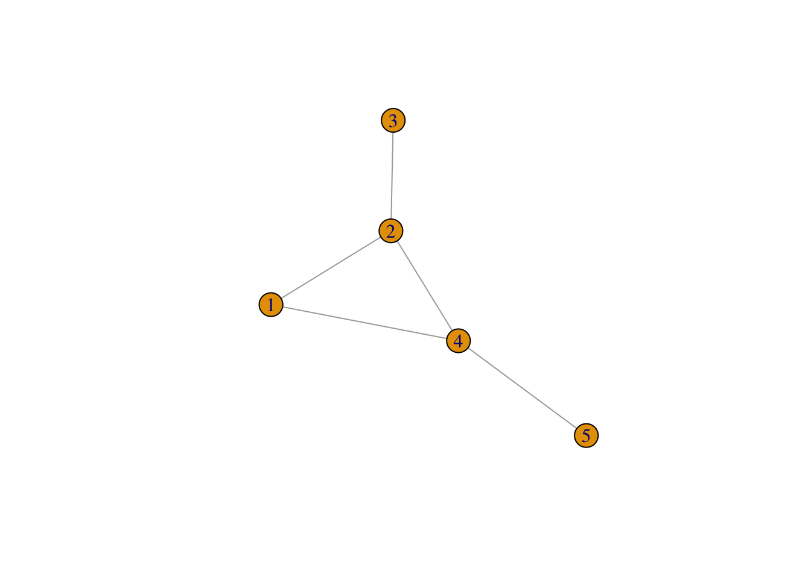
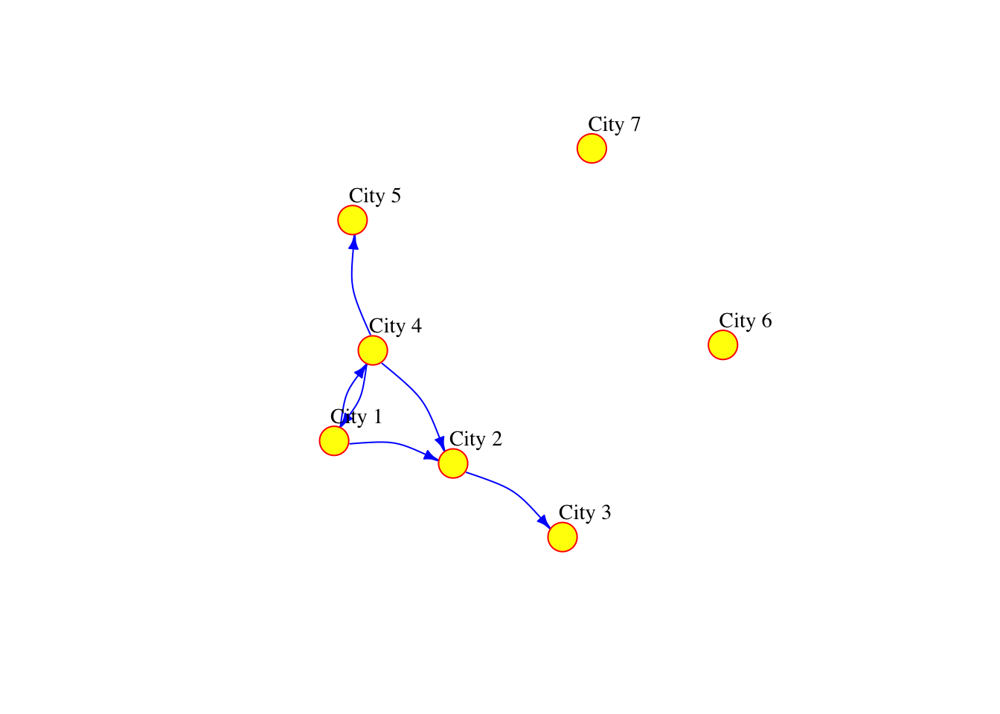
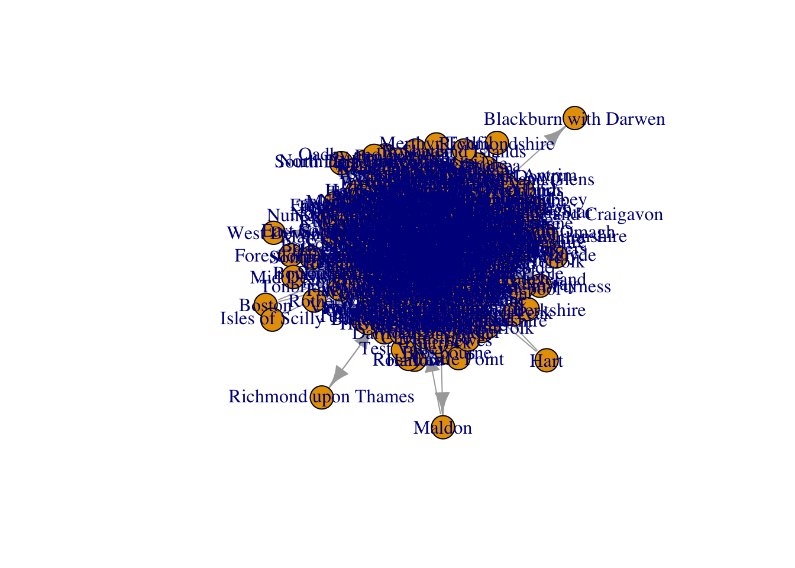
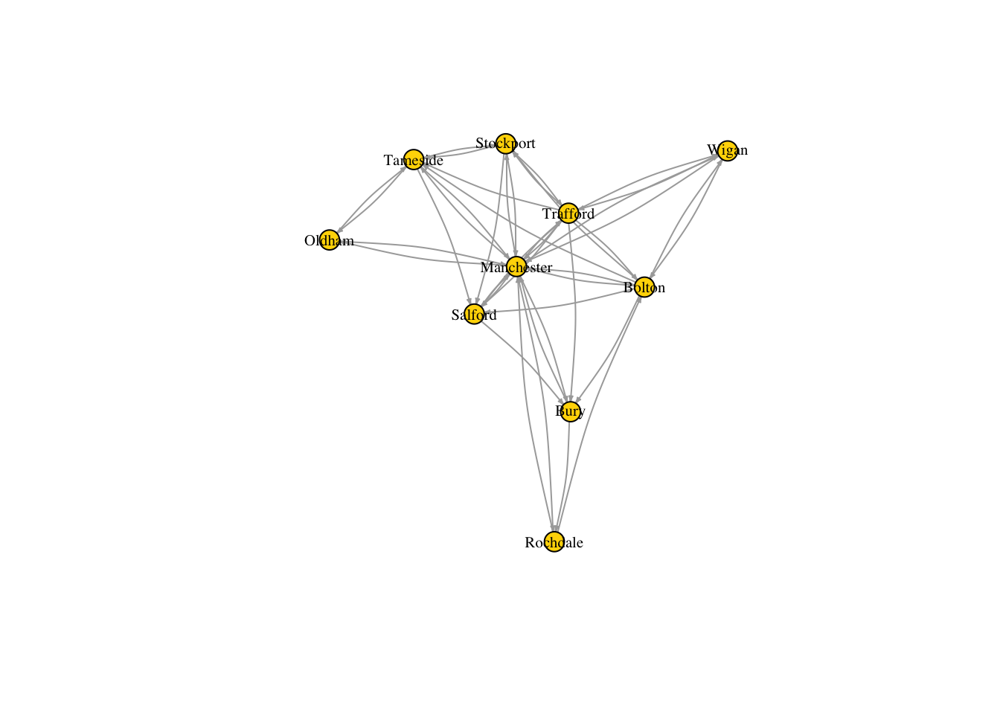
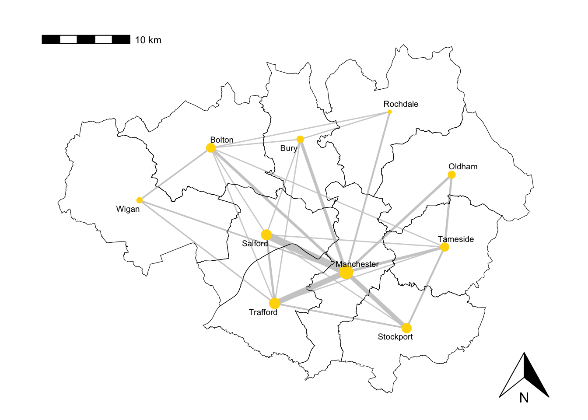

#Support for simple features, a standardised way to encode spatial vector data
library(sf)
#Data manipulation
library(dplyr)
# An R package for network manipulation and analysis
library(igraph)
# Provides a number of useful functions for working with character strings in R
library(stringr)5 Network Analysis
Network Analysis is an interdisciplinary analytical framework which studies the structure, behavior, and dynamics of the connections between different elements. Specific applications range from the analysis of social links between people to the analysis of transportation and migration links between places.
In particular, network analysis has proven to be highly effective for gaining insights about the behavior of populations, and the spatial distribution of people and resources (Prieto Curiel, Cabrera-Arnau, and Bishop 2022). By examining the networks of human interactions, researchers can gain a better understanding of how social, economic, and cultural factors influence individual behavior, and how patterns of migration and communication can shape the development of communities, regions and cities (Cabrera-Arnau et al. 2022). By the end of this session, you should be able to describe some of the most fundamental concepts and tools for network analysis. You should also be able to understand the potential of this approach to revolutionise the way in which we study populations.
The chapter is based on the following references:
Network analysis with R and igraph: NetSci X Tutorial (Ognyanova 2016).
igraph - The network analysis package.
The book Networks by Mark Newman (Newman 2018) is an excellent resource to learn more about network analysis, which covers the basics but also the more advanced concepts and methods.
5.1 Dependencies
To run the code in the rest of this workbook, we will need to load the following R packages:
5.2 Data
5.2.1 The US Census dataset
In this Chapter we will be looking at data provided by US Census Bureau. In particular, we have prepared the file metro_to_metro_2015_2019_US_migration.csv, which contains migration data between the US Metropolitan Statistical Areas (MSAs) in two consecutive years. The data is based on the 2015-2019 American Community Survey (ACS) estimates. For more information on the methodology for the data collection process, visit this link.
5.2.2 Import the data
Before importing the data, ensure to set the path to the directory where you stored it. Please modify the following line of code as needed.
df <- read.csv("./data/networks/metro_to_metro_2015_2019_US_migration.csv")Let us do a few changes in the names of the fields of the dataset so we can later manipulate them more easily.
#Ensure the MSA code is imported as a character and not as a number
df$MSA_Current_Code <- as.character(df$MSA_Current_Code)
#Include an additional column with the full name of the MSA in the format: Name, State
df$MSA_Previous_Name_State <- paste0(df$MSA_Previous_Name, ', ', df$MSA_Previous_State)
df$MSA_Current_Name_State <- paste0(df$MSA_Current_Name, ', ', df$MSA_Current_State)Each row corresponds to an origin-destination pair, so we can obtain the total number of reported migratory movements with the following command:
nrow(df)[1] 529305.3 Creating networks
Before we start to analyse the data introduced in Section 5.2, let us first take a step back to consider the main object of study of this Chapter: the so-called networks. In the most general sense, a network (also known as a graph) is a structure formed by a set of objects which may have some connections between them. The objects are represented by nodes (a.k.a. vertices) and the connections between these objects are represented by edges (a.k.a. links). Networks are used as a tool to conceptualise many real-life contexts, such as the friendships between the members of a year group at school, the direct airline connections between cities in a continent or the presence of hyperlinks between a set of websites. In this session, we will use networks to model the migratory flows between US cities.
5.3.1 Starting from the basics
In order to create, manipulate and analyse networks in R, we will use the igraph package, which we imported in Section 5.2. We start by creating a very simple network with the code below. The network contains five nodes and five edges and it is undirected, so the edges do not have orientations. The nodes and edges could represent, respectively, a set of cities and the presence of migration flows between these cities in two consecutive years.
# Create an undirected network with 5 nodes and 5 edges
# The number of nodes is given by argument n
# In this case, the node labels or IDs are represented by numbers 1 to 5
# The edges are specified as a list of pairs of nodes
g1 <- graph( edges=c(1,2, 1,4, 2,3, 2,4, 4,5), n=5, directed=F )
# A simple plot of the network allows us to visualise it
plot(g1) 
If the connections between the nodes of a network are non-reciprocal, the network is called directed. For example, this could correspond to a situation where there are people moving from city 1 to city 2, but nobody moving from city 2 to city 1. Note that in the code below we have not only added directions to the edges, but we have also added a few additional parameters to the plot function in order to customise the diagram.
# Creates a directed network with 7 nodes and 6 edges
# Note that we now have edge 1,4 and edge 4,1 and that 2 of the nodes are isolated
g2 <- graph( edges=c(1,2, 1,4, 2,3, 4,1, 4,2, 4,5), n=7, directed=T )
# A simple plot of the network with a few extra features
plot(g2, vertex.frame.color="red", vertex.label.color="black",
vertex.label.cex=0.9, vertex.label.dist=2.3, edge.curved=0.3, edge.arrow.size=.5, edge.color = "blue", vertex.color="yellow", vertex.size=15) 
The network can also be defined as a list containing pairs of named nodes. Then, it is not necessary to specify the number of nodes but the isolated nodes have to be included. The following code generates a network which is equivalent to the one above.
g3 <- graph( c("City 1","City 2", "City 2","City 3", "City 1","City 4", "City 4","City 1", "City 4","City 2", "City 4","City 5"), isolates=c("City 6", "City 7") )
plot(g3, vertex.frame.color="red", vertex.label.color="black",
vertex.label.cex=0.9, vertex.label.dist=2.3, edge.curved=0.3, edge.arrow.size=.5, edge.color = "blue", vertex.color="yellow", vertex.size=15) 
5.3.2 Adding attributes
In R, we can add attributes to the nodes, edges and the network. To add attributes to the nodes, we first need to access them via the following command:
V(g3)+ 7/7 vertices, named, from e7f6c6b:
[1] City 1 City 2 City 3 City 4 City 5 City 6 City 7The node attribute name is automatically generated from the node labels that we manually assigned before.
V(g3)$name[1] "City 1" "City 2" "City 3" "City 4" "City 5" "City 6" "City 7"But other node attributes could be added. For example, the current population of the cities represented by the nodes:
V(g3)$population <- c(134000, 92000, 549000, 1786000, 74000, 8000, 21000)Similarly, we can access the edges:
E(g3)+ 6/6 edges from e7f6c6b (vertex names):
[1] City 1->City 2 City 2->City 3 City 1->City 4 City 4->City 1 City 4->City 2
[6] City 4->City 5and add edge attributes, such as the number of people moving from an origin to a destination city in two consecutive years. We call this attribute the weight of the edge, since if there is a lot of people going from one city to another, the connection between these cities has more importance or “weight” in the network.
E(g3)$weight <- c(2000, 3000, 5000, 1000, 1000, 4000)We can examine the adjacency matrix of the network, which represents the presence of edges between different pairs of nodes. In this case, each row corresponds to an origin city and each column to a destination:
g3[] #The adjacency matrix of network g37 x 7 sparse Matrix of class "dgCMatrix"
City 1 City 2 City 3 City 4 City 5 City 6 City 7
City 1 . 2000 . 5000 . . .
City 2 . . 3000 . . . .
City 3 . . . . . . .
City 4 1000 1000 . . 4000 . .
City 5 . . . . . . .
City 6 . . . . . . .
City 7 . . . . . . .We can also look at the existing node and edge attributes.
vertex_attr(g3) #Node attributes of g3. Use edge_attr() to access the edge attributes$name
[1] "City 1" "City 2" "City 3" "City 4" "City 5" "City 6" "City 7"
$population
[1] 134000 92000 549000 1786000 74000 8000 21000Finally, it is possible to add network attributes
g3$title <- "Network of migration between cities"5.4 Reading networks from data files
5.4.1 Preparing the data to create an igraph object
At the beginning of the chapter, we defined a data frame called df based on some imported data from the US Census about migratory movements between different US cities, or more precisely, between US Metropolitan Statistical Areas. This is a large data frame containing 52,930 rows, but how can we turn this data frame into a network similar to the ones that we generated in Section 5.3. The igraph function graph_from_data_frame() can do this for us. To find out more about this function, we can run the following command:
help("graph_from_data_frame")As we can see, the input data for graph_from_data_frame() needs to be in a certain format which is different from our migration data frame. In particular, the function requires three arguments: 1) d, which is a data frame containing an edge list in the first two columns and any additional columns are considered as edge attributes; 2) vertices, which is either NULL or a data frame with vertex metadata (i.e. vertex attributes); and 3) directed, which is a boolean argument indicating whether the network is directed or not. Our next task is therefore to obtain 1) and 2) from the migration data frame called df.
Let us start with argument 1). Each row in df will correspond to an edge in the migration network since it contains information about a pair of origin and destination cities for two consecutive years. The names of the origin and destination cities are given by the columns in df called MSA_Previous_Name and MSA_Current_Name. In addition, the column called Movers_Metro_to_Metro_Flow_Estimate gives the number of people moving between the origin and the destination cities, so this will be the weight attribute of each edge in the migration network. Hence, we can define a data frame of edges which we will call df_edges that conforms with the format required by the argument 1) as follows:
#The pipe operator used below and denoted by %>% is a feature of the magrittr package, it takes the output of one function and passes it into another function as an argument
# Creates the df_edges data frame with data from df and renames the columns as "origin", "destination" and "weight"
df_edges <- data.frame(df$MSA_Previous_Name_State, df$MSA_Current_Name_State, df$Movers_Metro_to_Metro_Flow_Estimate) %>%
rename(origin = df.MSA_Previous_Name_State, destination = df.MSA_Current_Name_State, weight = df.Movers_Metro_to_Metro_Flow_Estimate)
#Ensure that the weight attribute is stored as a number and not as character
df_edges$weight <- as.numeric(gsub(",","",df_edges$weight)) For argument 2) we can define a data frame of nodes which we will call df_nodes, where each row will correspond to a unique node or city. To obtain all the unique cities from df, we can firstly obtain a data frame of unique origin cities, then a data frame of unique destinations, and finally, apply the full_join() function to these two data frames to obtain their union, which will be df_nodes. The name of the unique cities in df_nodes is in the column called label, the other columns can be seen as the nodes metadata.
df_unique_origins <- df %>%
distinct(MSA_Previous_Name_State) %>%
rename(name = MSA_Previous_Name_State)
df_unique_destinations <- df %>%
distinct(MSA_Current_Name_State) %>%
rename(name = MSA_Current_Name_State)
df_nodes <- full_join(df_unique_origins, df_unique_destinations, by = "name")Finally, a directed migration network can be obtained with the following line of code. It should contain 386 nodes and 52,930 edges. You can test this yourself with the functions that you learnt in Section 5.3.
g_US <- graph_from_data_frame(d = df_edges,
vertices = df_nodes,
directed = TRUE)If we try to plot the network g3 containing the migratory movements between all the US cities with the plot() function as we did before, we obtain a result which is rather undesirable…
plot(g_US)
5.4.2 Filtering the data to create a subgraph
We will dedicate the entirety of next section to explore tools that can help us improve the visualisation of networks, since it is one of the most important aspects of network analysis. To facilitate the visualisation in the examples shown in Section 5.5, we will work with a subset of the full network called g_US. A way to create a subnetwork is to filter the original data frame. In particular, we will filter df to only include cities from a state, in this case, Washington. To filter, we use the grepl() function, which stands for grep logical. Both grep() and grepl() allow us to check whether a pattern is present in a character string or vector of a character string. While the grep() function returns a vector of indices of the element if a pattern exists in that vector, the grepl() function returns TRUE if the given pattern is present in the vector. Otherwise, it returns FALSE. In this case, we are filtering the dataset so that only the rows where the field MSA_Current_State is WA, which is the official abbreviation for Washington state.
# Filter the original data frame
df_sub <- df %>% filter(grepl('WA', MSA_Current_State)) %>% filter(grepl('WA', MSA_Previous_State)) Then, we can prepare the data as we did before to create gUS. But, instead of basing the network on df, we will generate it from df_sub.
# Create a new data frame containing the columns for the origin, destination, and weight from df_sub
# Rename the columns to origin, destination, and weight respectively
df_sub_edges <- data.frame(df_sub$MSA_Previous_Name, df_sub$MSA_Current_Name, df_sub$Movers_Metro_to_Metro_Flow_Estimate) %>%
rename(origin = df_sub.MSA_Previous_Name, destination = df_sub.MSA_Current_Name, weight = df_sub.Movers_Metro_to_Metro_Flow_Estimate)
# Split long names into several lines for better visualization in the resulting graph
df_sub_edges$origin <- gsub("-", "-\n", df_sub_edges$origin)
df_sub_edges$destination <- gsub("-", "-\n", df_sub_edges$destination)
# Convert the weight column to numeric, removing any commas that may be present
df_sub_edges$weight <- as.numeric(gsub(",","",df_sub_edges$weight))
# Create a data frame of unique origins by selecting distinct values of MSA_Previous_Name from df_sub
# Rename the resulting column to "name"
df_sub_unique_origins <- df_sub %>%
distinct(MSA_Previous_Name) %>%
rename(name = MSA_Previous_Name)
# Create a data frame of unique destinations by selecting distinct values of MSA_Current_Name from df_sub
# Rename the resulting column to "name"
df_sub_unique_destinations <- df_sub %>%
distinct(MSA_Current_Name) %>%
rename(name = MSA_Current_Name)
# Merge the unique origins and unique destinations data frames into one data frame of nodes
# Match the rows based on the "name" column
df_sub_nodes <- full_join(df_sub_unique_origins, df_sub_unique_destinations, by = "name")
# Split long names into several lines for better visualization in the resulting graph
df_sub_nodes$name <- gsub("-", "-\n", df_sub_nodes$name)
# Create a graph object from the edges and nodes data frames
g_sub <- graph_from_data_frame(d = df_sub_edges,
vertices = df_sub_nodes,
directed = TRUE)5.5 Network visualisation
5.5.1 Visualisation with igraph
Let us start by generating the most basic visualisation of g_sub.
plot(g_sub)
This plot can be improved by changing adding a few additional arguments to the plot() function. For example, by just changing the color and size of the labels, the color and size of the nodes and the arrow size of the edges, we can already see some improvements.
plot(g_sub, vertex.size=10, edge.arrow.size=.2, edge.curved=0.1,
vertex.color="gold", vertex.frame.color="black",
vertex.label=V(g_sub)$name, vertex.label.color="black",
vertex.label.cex=.65)
But there are few more things we can do not only to improve the look of the diagram, but also to include more information about the network. For example, we can set the size of the nodes so that it reflects the total number of people that the corresponding cities receive. We can do this by adding a new node attribute, inflow, which is obtained as the sum of the rows of the adjacency matrix of g_sub.
V(g_sub)$inflow <- rowSums(as.matrix(g_sub[]))Below we set the node size based on the inflow attribute. Note the formula \(0.4\times(V(gsub)\$inflow)^{0.4}\), where the power of 0.4 is chosen to scale the size of the nodes in such a way that the largest ones do not get excessively large and the smallest ones do not get excessively small. We also set the edge width based on its weight, which is the total number of people migrating from the origin and destination cities that it connects.
# Set node size based on inflow of migrants:
V(g_sub)$size <- 0.4*(V(g_sub)$inflow)^0.4
# Set edge width based on weight:
E(g_sub)$width <- E(g_sub)$weight/1200Run the code below to discover how the aspect of the network has significantly improved with the modifications that we have introduced above.
plot(g_sub, vertex.size=V(g_sub)$size, edge.arrow.size=.15, edge.arrow.width=.2, edge.curved=0.1, edge.width=E(g_sub)$width, edge.color ="gray80",
vertex.color="gold", vertex.frame.color="gray90",
vertex.label=V(g_sub)$name, vertex.label.color="black",
vertex.label.cex=.65)
5.5.2 Visualisation of spatial networks
Firstly, we will import geographical data for the metropolitan and micropolitan statistical areas in the whole of the US, using the sf package. Here, we are only interested in the metropolitan areas so we will filter the data frame cbsa_us to keep only the metropolitan areas, i.e. those entries with value M1 for the column named LSAD.
# Import core-based statistical areas https://www.census.gov/geographies/mapping-files/time-series/geo/cartographic-boundary.2020.html#list-tab-YXS5CUH5MBYOZ7MJLN
cbsa_us <- st_read("./data/networks/cb_2020_us_cbsa_500k/cb_2020_us_cbsa_500k.shp")Reading layer `cb_2020_us_cbsa_500k' from data source
`/Users/PIETROST/Library/CloudStorage/Dropbox/GitHub/r4ps/data/networks/cb_2020_us_cbsa_500k/cb_2020_us_cbsa_500k.shp'
using driver `ESRI Shapefile'
Simple feature collection with 939 features and 9 fields
Geometry type: MULTIPOLYGON
Dimension: XY
Bounding box: xmin: -178.3347 ymin: 17.88328 xmax: -65.56427 ymax: 65.45352
Geodetic CRS: NAD83# Filter the original data frame to obtain only metro areas
msa_us <- cbsa_us %>% filter(grepl('M1', LSAD)) We will now find the centroid of each MSA polygon and add columns to msa_us for the longitude and latitude of each centroid.
# Add longitude and latitude corresponding to centroid of each MSA polygon
msa_us$lon_centroid <- st_coordinates(st_centroid(msa_us$geometry))[,"X"]
msa_us$lat_centroid <- st_coordinates(st_centroid(msa_us$geometry))[,"Y"]Since we are focusing on Washington state, let us filter msa_us so that it only includes data from Washington. This requires some data manipulation via the library stringr:
# Create a new column with the name of the state taken from the last two characters of entries in column NAME
msa_us$NAME_ONLY <- gsub(",.*$", "", msa_us$NAME)
# Long names of MSAs are split into lines for visualisation purposes
msa_us$NAME_ONLY <- gsub("-", "-\n", msa_us$NAME_ONLY)
# Create a new column with the name of the state taken from the last two characters of entries in column NAME
msa_us$STATE <- substr(msa_us$NAME, nchar(msa_us$NAME)-1, nchar(msa_us$NAME))
# Filter to keep the metro areas belonging to Washington state only
msa_sub <- msa_us %>% filter(grepl('WA', STATE)) We can now plot the polygons for the MSA belonging to Washington state as well as the centroids:
plot(st_geometry(msa_sub))
plot(st_centroid(msa_sub$geometry), add=TRUE, col="red", cex=0.5, pch=20)
However, we still need to link this data to the network data that we obtained before. In order to incorporate the geographic information to the nodes of the migration subnetwork, we can join data from two data frames: msa_sub, which contains the geographic data, and df_sub_nodes, which contains the names of the nodes. To do this, we can use the function left_join() and then, select only the columns of interest. For more information on this magical function, check this link.
# Join the data frame of nodes df_sub_nodes with the geographic information of the centroid of each MSA
df_sub_spatial_nodes <- df_sub_nodes %>% left_join(msa_sub, by = c("name" = "NAME_ONLY")) %>% select(c("name", "lon_centroid", "lat_centroid"))lo <- as.matrix(df_sub_spatial_nodes[,2:3])plot(st_geometry(msa_sub), border=adjustcolor("gray50"))
plot(g_sub, layout=lo, add = TRUE, rescale = FALSE, vertex.size=V(g_sub)$size, edge.arrow.size=.1, edge.arrow.width=1., edge.curved=0.1, edge.width=E(g_sub)$width, edge.color=adjustcolor("gray80", alpha.f = .6), vertex.color="gold", vertex.frame.color="gray90",
vertex.label=V(g_sub)$name, vertex.label.color="black",
vertex.label.cex=.45)
5.5.3 Alternative visualisations
In this session we have based our visualisations on igraph, however, there exist a variety of packages that would also allow us to generate nice plots of networks.
For example, migration networks are particularly well-suited to be represented as a chord diagram. If you want to explore this type of visualisation, you can find further information on the official R documentation and also, for example, on this other link link.
5.6 Network metrics
Here we define some of the most important metrics that help us quantify different characteristics of a network. We will use the migration network for the whole of the US again, g_US. It has more nodes and edges than g_sub and consequently, its behaviour is richer and helps us illustrate better the concepts that we introduce in this section.
5.6.1 Density
The network density is defined as the proportion of existing edges out of all the possible edges. In a network with \(n\) nodes, the total number of possible edges is \(n\times(n-1)\), i.e. the number of edges if each node was connected to all the other nodes. A density equal to \(1\) corresponds to a situation where \(n\times(n-1)\) edges are present. A network with no edges at all would have density equal to \(0\). The line of code below tells us that the density of g_sub is approximately 0.33, meaning that about 33% of all the possible edges are present, or in other words, that there are migratory movements between almost a third of every pair of cities.
edge_density(g_US, loops=FALSE)[1] 0.32834585.6.2 Reciprocity
The reciprocity in a directed network is the proportion of reciprocated connections between nodes (i.e. number of pairs of nodes with edges in both directions) from all the existing edges.
reciprocity(g_US)[1] 0.6067259From this result, we conclude that about 62% of the pairs of nodes that are connected have edges in both directions.
5.6.3 Degree
The total degree of a node refers to the number of edges that emerge from or point at that node. The in-degree of a node in a directed network is the number of edges that point at it whereas the out-degree is the number of edges that emerge from it. The degree() functions, allows us to compute the degree of one or more nodes and allows us to specify if we are interested in the total degree, the in-degree or the out-degree.
# Compute degree of the nodes given by v belonging to graph g_US, in this case the in-degree
deg <- degree(g_US, v=V(g_US), mode="in")
# Produces histogram of the frequency of nodes with a certain in-degree
hist(deg, breaks = 30, main="Histogram of node in-degree")As we can see in the histogram, many cities receive immigrants from 60-70 different cities. Very few cities receive immigrants from 300 or above cities. We can check which is the city with the maximum in-degree.
V(g_US)$name[degree(g_US, mode="in")==max(degree(g_US, mode="in"))][1] "Phoenix-Mesa-Chandler, AZ"
[2] "Washington-Arlington-Alexandria, DC-VA-MD-WV"We actually obtain a tie between two: the MSA containing Phoenix in Arizona and the MSA containing Washington DC, which actually spans over four states. Their in-degree is 354 as we can see below.
degree(g_US, v=c("Phoenix-Mesa-Chandler, AZ"), mode="in")Phoenix-Mesa-Chandler, AZ
354 degree(g_US, v=c("Washington-Arlington-Alexandria, DC-VA-MD-WV"), mode="in")Washington-Arlington-Alexandria, DC-VA-MD-WV
354 Note that the fact that these two cities have the largest in-degree does not necessarily mean that they are the ones receiving the largest number of migrants.
5.6.4 Distances
A path in a network between node \(A\) and node \(B\) is a sequence of edges which joins a sequence of distinct nodes, starting at node \(A\) and terminating at node \(B\). In a directed path there is an added restriction: the edges must be all directed in the same direction.
The length of a path between nodes \(A\) and \(B\) is normally defined as the number of edges that form the path. The shortest path is the minimum number of edges that need to be traversed to travel from \(A\) to \(B\).
The length of a path can also be defined in other ways. For example, if the edges are weighted, it can be defined as the sum of the weights of the edges that form the path.
In R, we can use the function shortest_paths() to find the shortest path between a given pair of nodes and its length. For example, below we can see that the shortest path between the MSA containing New York and the MSA containing Los Angeles is one. This is not surprising since we would expect an edge connecting these two MSAs representing the fact that there is people migrating from one to the other in two consecutive years.
shortest_paths(g_US,
from = V(g_US)$name=="New York-Newark-Jersey City, NY-NJ-PA",
to = V(g_US)$name=="Los Angeles-Long Beach-Anaheim, CA",
weights=NA, #If weights=NULL and the graph has a weight edge attribute, then the weigth attribute is used. If this is NA then no weights are used (even if the graph has a weight attribute)
output = "both") # outputs both path nodes and edges$vpath
$vpath[[1]]
+ 2/402 vertices, named, from 89faa12:
[1] New York-Newark-Jersey City, NY-NJ-PA Los Angeles-Long Beach-Anaheim, CA
$epath
$epath[[1]]
+ 1/52930 edge from 89faa12 (vertex names):
[1] New York-Newark-Jersey City, NY-NJ-PA->Los Angeles-Long Beach-Anaheim, CA
$predecessors
NULL
$inbound_edges
NULLOf all shortest paths in a network, the length of the longest one is defined as the diameter of the network. In this case, the diameter is 3 meaning that the longest of all shortest paths in g_US has 3 edges.
diameter(g_US, directed=TRUE, weights=NA)[1] 3The mean distance is defined as the average length of all shortest paths in the network. The mean distance will always be smaller or equal than the diameter.
mean_distance(g_US, directed=TRUE, weights=NA)[1] 1.6633355.6.5 Centrality
Centrality metrics assign scores to nodes (and sometimes also edges) according to their position within a network. These metrics can be used to identify the most influential nodes.
We have already explored some concepts which can be regarded as centrality metrics, for example, the degree of a node or the weighted degree of a node, also known as the strength of a node, which is the sum of edge weights that link to adjacent nodes or, in other words, the in-flow or out-flow associated with each node. As we can see from the code below, many nodes in g_US have an in-flow of less than 100 immigrants. Note that we have set mode to c(“in”) for inflow and we have set the weights parameter to NULL since we want to know the sum of weights for the incoming edges and not just the total number of incoming edges.
# Compute strength of the nodes belonging to graph g_US, in this case the in-flow
strength_US <- strength(g_US, #The input graph
vids = V(g_US), # The vertices for which the strength will be calculated.
mode = c("in"), #“in” for in-degree
loops = FALSE, #whether the loop edges are also counted
weights = NULL #If the graph has a weight edge attribute, then this is used by default when weights=NULL. If the graph does not have a weight edge attribute and this argument is NULL, then a warning is given and degree is called.
)
#Produce histogram of the frequency of nodes with a certain strength
hist(strength_US, breaks = 50, main="Histogram of node strength")
We can check which is the city with the maximum strength:
V(g_US)$name[strength(g_US, vids = V(g_US), mode = c("in"), loops = FALSE, weights = NULL)==max(strength(g_US, vids = V(g_US), mode = c("in"), loops = FALSE, weights = NULL))][1] "New York-Newark-Jersey City, NY-NJ-PA"We will look at another two important centrality metrics that are based on the structure of the network. Firstly, closeness centrality which is a measure of the length of the shortest path between a node and all the other nodes. For a given node, it is computed as the inverse of the average shortest paths between that node and every other node in the network. So, if a node has closeness centrality close to \(1\), it means that on average, it is very close to the other nodes in the network. A closeness centrality of exactly \(0\) corresponds to an isolated node.
close_centr <- closeness(g_US, mode="in", weights=NA) #using unweighted edges
hist(close_centr, breaks = 50, main="Histogram of closeness centrality")The other metric is known as betweenness centrality. For a given node, it is a measure of the number of shortest paths that go through that node. Therefore, nodes with high values of betweenness centrality are those that play a very important role in the connectivity of the network. Betweenness can also be computed for edges.
between_centr <- betweenness(g_US, v = V(g_US), directed = TRUE, weights = NA)
hist(between_centr, breaks = 50, main="Histogram of betweenness centrality")6 Questions
In this set of questions, we will use internal migration data corresponding to the London boroughs. The original data can be found on the UK Office for National Statistics website. The data set that we use below corresponds for the year ending in June 2019 and has already been cleaned for you. You can import it with the following line of code:
df <- read.csv("./data/networks/LA_to_LA_2019_London_clean.csv")Essay questions:
Create a network with igraph that represents the migratory movements between the London boroughs in the year ending in June 2019. The nodes of this network will represent the different boroughs and the edges will represent the migration flows between them. Make sure the network object is directed.
Produce histograms for the unweighted in-degree and out-degree of the nodes in the network. Produce histograms for the weighted in-degree and out-degree (also known as strength of inflows and outflows) as well. Combine all four histograms in one plot. Additionally, compute the edge density of the network (with no loops). Comment on all your observations. Finally, based on network metrics, what is the code for the London borough with the largest incoming population as well as the London borough with the largest outgoing population?
BONUS QUESTION. This question will not be assessed but it is an excellent exercise for those of you who are keen on networks. Create a visualisation of a migration network showing the flows between different boroughs. You can get as creative as you like. You may use igraph or other tools that have not been discussed in this workbook but that you may want to explore by yourself.
You are most welcome to show your figure to one of the lecturers for an opportunity to get feedback. However, since it is not assessed, you are not supposed to include it in the essay.
For your visualisation, you may want to use geographical data for the London boroughs. To access it, you should run the code below. It loads the necessary data for the geographical boundaries of the Local Authority Districts (LADs) in England and Wales and then, it filters the dataset so only the London boroughs remain, i.e. those LADs starting with E09. The geographical boundaries can be downloaded from the ONS Open Geography Portal website but we have also included a copy of the dataset in the GitHub repository associated with this module.
# Import boundaries for local authorities in England and Wales
LA_UK <- st_read("./data/networks/Local_Authority_Districts_(December_2022)_Boundaries_UK_BFC/LAD_DEC_2022_UK_BFC.shp")Reading layer `LAD_DEC_2022_UK_BFC' from data source
`/Users/PIETROST/Library/CloudStorage/Dropbox/GitHub/r4ps/data/networks/Local_Authority_Districts_(December_2022)_Boundaries_UK_BFC/LAD_DEC_2022_UK_BFC.shp'
using driver `ESRI Shapefile'
Simple feature collection with 374 features and 10 fields
Geometry type: MULTIPOLYGON
Dimension: XY
Bounding box: xmin: -116.1928 ymin: 5336.966 xmax: 655653.8 ymax: 1220302
Projected CRS: OSGB36 / British National Grid# Filter the original data frame to obtain only London boroughs
LND_boroughs <- LA_UK %>% filter(grepl('E09', LAD22CD))
plot(st_geometry(LND_boroughs))